The Walk
·
This is the walk we take everyone who comes to stay. It follows the south bank of the Thames from Vauxhall to St Katharine Docks, past most of the London you know from postcards, and it ends with a drink at the Dickens Inn.
Questa è la passeggiata che facciamo con tutti quelli che vengono a trovarci. Segue la riva sud del Tamigi da Vauxhall fino a St Katharine Docks, passando davanti a quasi tutta la Londra delle cartoline, e finisce con un drink al Dickens Inn.
Move from stop to stop and the map follows you along the route. The solid red line shows how far you've come. The dotted spur near the London Eye is an optional detour.
Passa da una tappa all'altra e la mappa ti segue lungo il percorso. La linea rossa piena mostra quanta strada hai fatto. La diramazione tratteggiata vicino al London Eye è una deviazione facoltativa.
Getting thereCome arrivare
Start at Vauxhall station (Victoria line, or trains from Waterloo). Head for the river and the big green building by Vauxhall Bridge.
Si parte dalla stazione di Vauxhall (linea Victoria della metropolitana, o treni da Waterloo). Dirigiti verso il fiume e il grande edificio verde accanto a Vauxhall Bridge.
Before you goPrima di partire
Wear comfortable shoes. It's nearly all flat, but it's a long way, and it's always windier by the river. Borough Market is our lunch stop and it's closed on Mondays, so we don't do this walk on a Monday.
Metti scarpe comode: è quasi tutto in piano, ma la strada è lunga, e lungo il fiume tira sempre più vento. Il pranzo è a Borough Market, che il lunedì è chiuso, quindi di lunedì questa passeggiata non la facciamo.
Vauxhall
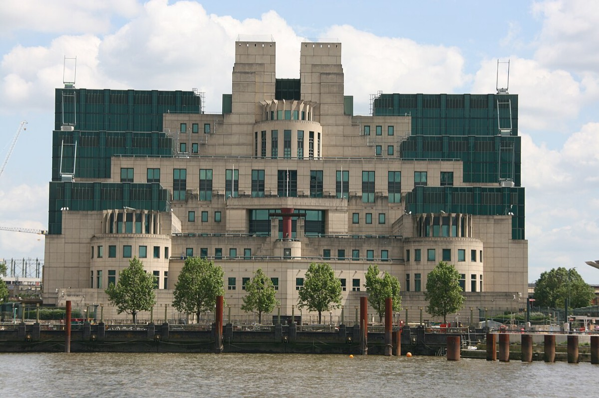
The big green-and-cream building by the bridge is the headquarters of MI6, the Secret Intelligence Service. Terry Farrell designed it and it opened in 1994. It isn't very secret: it gets attacked in three James Bond films.
Il grande edificio verde e crema accanto al ponte è la sede dell'MI6, i servizi segreti britannici. Lo ha progettato Terry Farrell ed è stato inaugurato nel 1994. Non è poi così segreto: viene attaccato in tre film di James Bond.
The thick green windows. Then turn north with the river on your left. It stays on your left until Tower Bridge.
Le spesse finestre verdi. Poi gira verso nord con il fiume alla tua sinistra. Resterà alla tua sinistra fino a Tower Bridge.
- Tate Britain The national gallery of British art, with the biggest collection of Turner's paintings.La galleria nazionale dell'arte britannica, con la più grande collezione di dipinti di Turner.
Covid Memorial WallIl muro della memoria del Covid
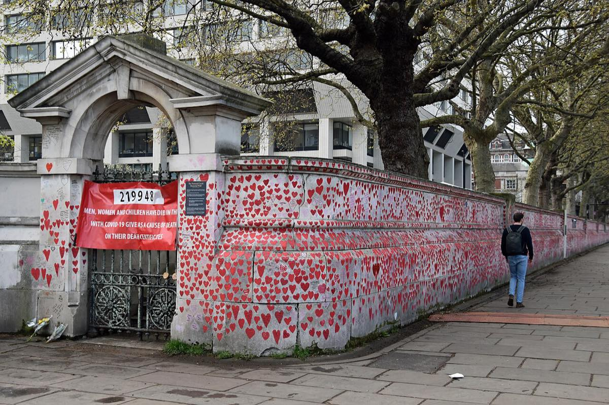
For about 500 metres along the river, opposite Parliament, the wall is covered in hand-painted red hearts. Each heart stands for someone in the UK who died of Covid-19. Bereaved families and the campaign group Led By Donkeys started painting them in March 2021. There are now more than 250,000, and volunteers still look after them.
Per circa 500 metri lungo il fiume, di fronte al Parlamento, il muro è coperto di cuori rossi dipinti a mano. Ogni cuore rappresenta una persona morta di Covid-19 nel Regno Unito. Le famiglie delle vittime e il gruppo Led By Donkeys hanno iniziato a dipingerli nel marzo 2021. Oggi sono più di 250.000, e dei volontari se ne prendono ancora cura.
The writing inside the hearts: names, dates, messages to mums and grandads. Stop and read a few.
Le scritte dentro i cuori: nomi, date, messaggi a mamme e nonni. Fermati a leggerne qualcuno.
On the wayLungo la strada
Just before the wall, by Lambeth Bridge, is the red-brick gatehouse of Lambeth Palace. The Archbishops of Canterbury have had their London home here for about 800 years.
Poco prima del muro, accanto a Lambeth Bridge, c'è il portale in mattoni rossi di Lambeth Palace. Da circa 800 anni è la residenza londinese degli arcivescovi di Canterbury.
Big Ben & ParliamentBig Ben e il Parlamento
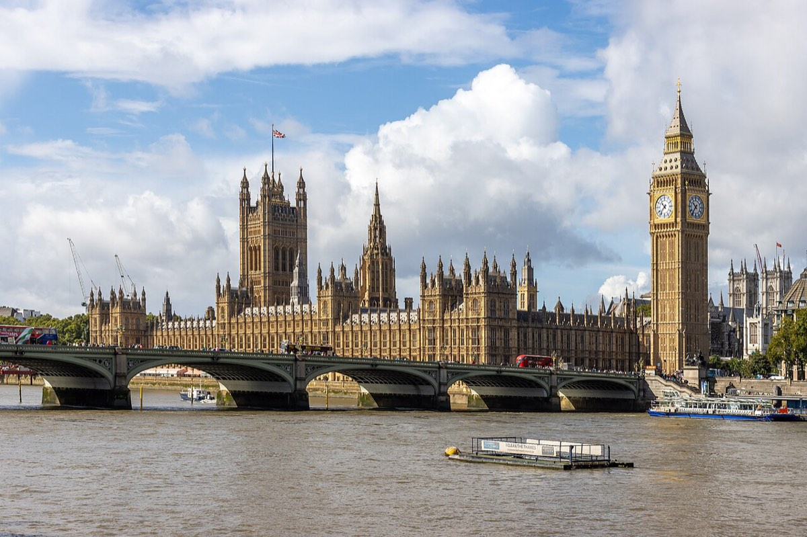
Across the river is the Palace of Westminster, where both Houses of Parliament sit. Most of it was rebuilt by Charles Barry and Augustus Pugin after a fire in 1834. "Big Ben" is really the name of the great bell. The clock tower has been called the Elizabeth Tower since 2012.
Dall'altra parte del fiume c'è il Palazzo di Westminster, sede delle due Camere del Parlamento. Quasi tutto fu ricostruito da Charles Barry e Augustus Pugin dopo un incendio nel 1834. «Big Ben» in realtà è il nome della grande campana. La torre dell'orologio si chiama Elizabeth Tower dal 2012.
Walk a few steps onto Westminster Bridge for the classic photo. The bridge is painted green, said to match the benches in the House of Commons. Lambeth Bridge, behind you, is red, like the House of Lords.
Fai qualche passo su Westminster Bridge per la foto classica. Il ponte è verde, si dice come i banchi della Camera dei Comuni. Lambeth Bridge, alle tue spalle, è rosso, come la Camera dei Lord.
- Big Ben The bell inside the Elizabeth Tower. It has struck the hours since 1859.La campana dentro la Elizabeth Tower. Batte le ore dal 1859.
London Eye
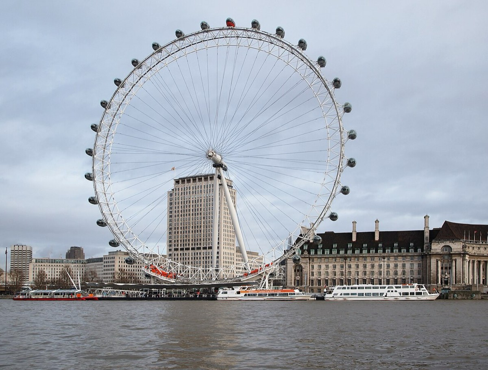
Built for the millennium and meant to stay for only five years, the Eye opened to the public in March 2000 and never left. It's 135 metres high and one turn takes about half an hour.
Costruito per il millennio e pensato per restare solo cinque anni, il London Eye ha aperto al pubblico nel marzo 2000 e non se n'è più andato. È alto 135 metri e un giro dura circa mezz'ora.
Count the capsules. There are 32, but they're numbered up to 33, because there's no number 13.
Conta le cabine. Sono 32, ma la numerazione arriva a 33, perché il numero 13 non c'è.
Leake Street tunnelIl tunnel di Leake Street
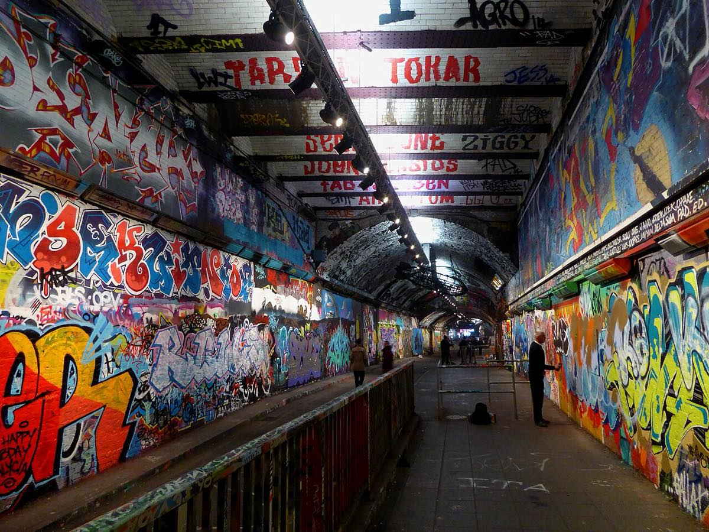
A short detour inland from the Eye. Leake Street is a road tunnel under Waterloo station where painting the walls is allowed. It started with Banksy's Cans Festival in 2008, and the walls have been painted over ever since, sometimes several times a day.
Una breve deviazione verso l'interno dal London Eye. Leake Street è un tunnel stradale sotto la stazione di Waterloo dove si può dipingere sui muri. Tutto è iniziato con il Cans Festival di Banksy nel 2008, e da allora i muri vengono ridipinti di continuo, a volte più volte al giorno.
Someone at work with a spray can. Whatever you see today will probably be gone by next week.
Qualcuno all'opera con una bomboletta. Quello che vedi oggi probabilmente sarà sparito entro la settimana prossima.
Southbank Centre & marketsSouthbank Centre e mercati
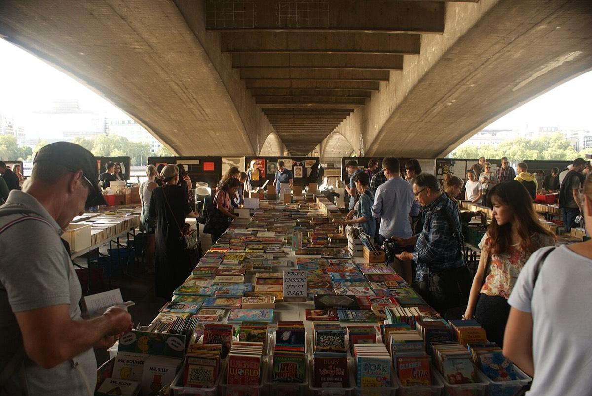
The Royal Festival Hall was built for the Festival of Britain in 1951 and is still one of London's main concert halls. Around it is a cluster of concrete arts buildings. Under the Queen Elizabeth Hall is a skate park that skaters have used since the 1970s.
La Royal Festival Hall fu costruita per il Festival of Britain del 1951 ed è ancora una delle principali sale da concerto di Londra. Intorno c'è un gruppo di edifici in cemento dedicati alle arti. Sotto la Queen Elizabeth Hall c'è uno skate park frequentato dagli skater fin dagli anni Settanta.
Under Waterloo Bridge there's a second-hand book market every day. Behind the Festival Hall, the food market runs from Friday to Sunday, and usually closes for a few weeks after Christmas.
Sotto Waterloo Bridge c'è un mercato di libri usati tutti i giorni. Dietro la Festival Hall, il mercato del cibo è aperto dal venerdì alla domenica, e di solito chiude per qualche settimana dopo Natale.
The tables of old maps and prints at the book market. They make good, cheap presents.
I banchi di vecchie mappe e stampe al mercato dei libri. Sono regali belli ed economici.
- Cleopatra's Needle An Egyptian obelisk about 3,500 years old, put up here in 1878. The marks on its base and on one of the sphinxes are shrapnel damage from a German air raid in 1917. Un obelisco egizio di circa 3.500 anni, eretto qui nel 1878. I segni sul basamento e su una delle sfingi sono schegge di un bombardamento tedesco del 1917.
- Somerset House An 18th-century palace of government offices. In winter its courtyard becomes an ice rink.Un palazzo del Settecento che ospitava uffici dello Stato. D'inverno il cortile diventa una pista di pattinaggio sul ghiaccio.
Tate Modern
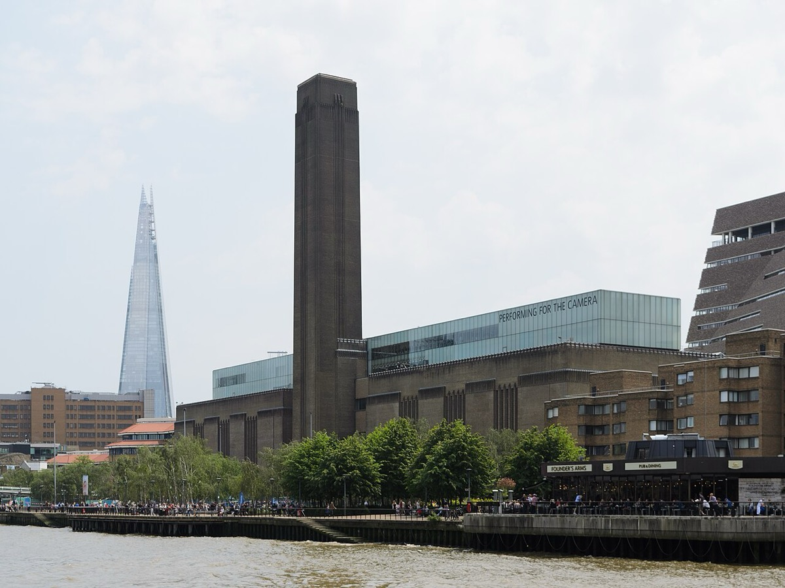
This was Bankside Power Station, designed by Giles Gilbert Scott, who also designed the red telephone box. It became a gallery in 2000. The main collection is free, and the old Turbine Hall shows one huge new artwork every year.
Questa era la centrale elettrica di Bankside, progettata da Giles Gilbert Scott, lo stesso che disegnò la cabina telefonica rossa. È diventata un museo nel 2000. La collezione principale è gratuita, e nella vecchia Turbine Hall ogni anno c'è una nuova opera gigantesca.
The free viewing level on Level 10 of the Blavatnik Building, the twisted brick tower at the back. If you've got 20 minutes to spare, the view over the river is worth it.
La terrazza panoramica gratuita al livello 10 del Blavatnik Building, la torre di mattoni dalla forma ritorta sul retro. Se hai 20 minuti, la vista sul fiume ne vale la pena.
Millennium Bridge & St Paul'sMillennium Bridge e St Paul's
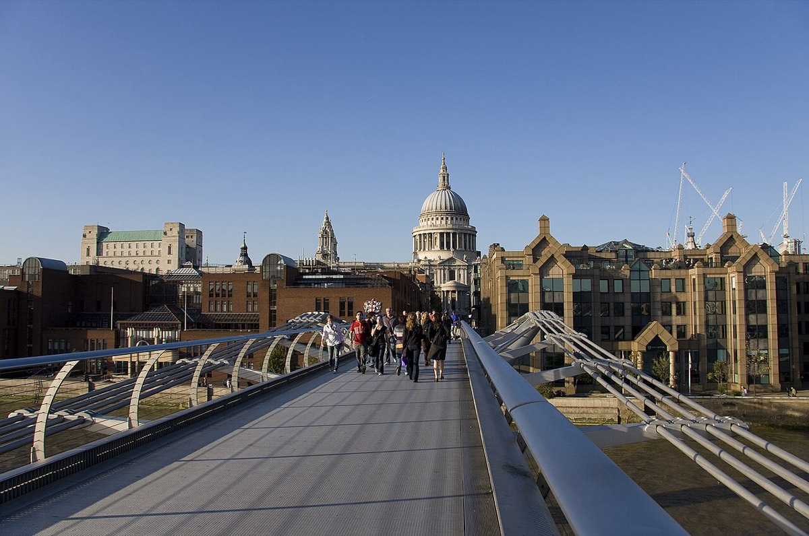
This footbridge opened in June 2000 and closed two days later, because it swayed when crowds walked across. Londoners still call it the Wobbly Bridge. It reopened in 2002 with dampers fitted underneath.
Questo ponte pedonale fu inaugurato nel giugno 2000 e chiuso due giorni dopo, perché oscillava quando la folla lo attraversava. I londinesi lo chiamano ancora Wobbly Bridge, «il ponte traballante». Ha riaperto nel 2002 con degli ammortizzatori montati sotto.
At the far end is St Paul's Cathedral. Christopher Wren built it after the Great Fire of 1666, and it was declared complete in 1711.
Dall'altra parte c'è la cattedrale di St Paul. Christopher Wren la costruì dopo il Grande Incendio del 1666, e fu dichiarata completata nel 1711.
The view from the middle of the bridge, which lines up with the dome of St Paul's. Harry Potter fans may recognise the bridge: Death Eaters destroy it in Half-Blood Prince.
La vista dal centro del ponte, allineata con la cupola di St Paul. I fan di Harry Potter potrebbero riconoscere il ponte: i Mangiamorte lo distruggono nel Principe Mezzosangue.
You don't need to go onto the bridge. St Paul's is in clear view from the riverside path.Non serve salire sul ponte: St Paul's si vede benissimo dal lungofiume.
- St Paul's Cathedral Its dome has been part of London's skyline for over 300 years.La sua cupola fa parte del panorama di Londra da più di 300 anni.
Shakespeare's GlobeIl Globe di Shakespeare
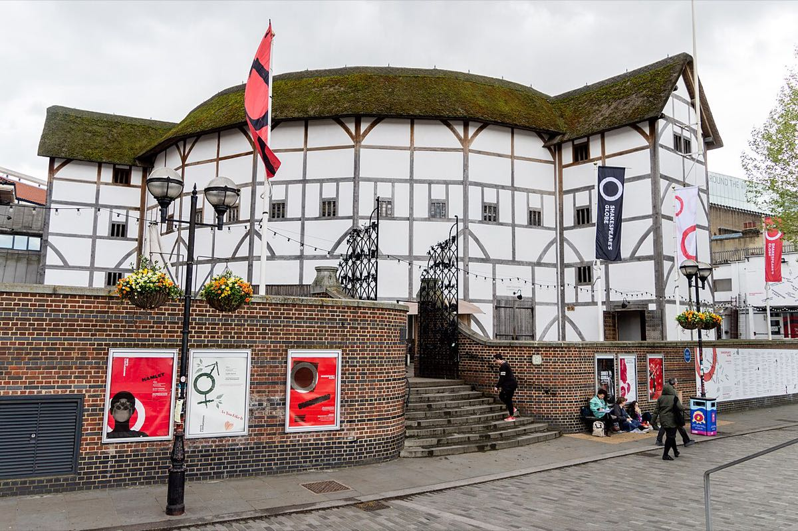
A reconstruction of the open-air theatre where many of Shakespeare's plays were first staged. It opened in 1997, about 230 metres from the original site. The American actor Sam Wanamaker spent more than 20 years making it happen, and died before it opened. Its thatched roof is said to be the first allowed in London since the Great Fire.
Una ricostruzione del teatro all'aperto dove andarono in scena per la prima volta molte opere di Shakespeare. Ha aperto nel 1997, a circa 230 metri dal sito originale. L'attore americano Sam Wanamaker ci ha lavorato per più di vent'anni ed è morto prima dell'inaugurazione. Si dice che il suo tetto di paglia sia il primo permesso a Londra dopo il Grande Incendio.
In summer you can watch a play standing in the yard in front of the stage, just as people did in Shakespeare's day. Those tickets are the cheapest in the house.
D'estate puoi vedere uno spettacolo in piedi nella platea davanti al palco, come ai tempi di Shakespeare. Sono i biglietti più economici del teatro.
Golden Hinde
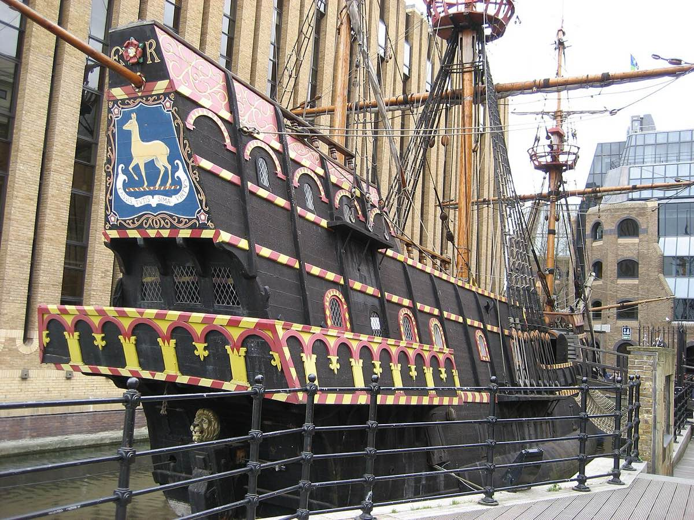
A full-size replica of the ship in which Francis Drake sailed around the world between 1577 and 1580. It was launched in 1973. It's tiny, and it's hard to believe the original crossed oceans.
Una replica a grandezza naturale della nave con cui Francis Drake fece il giro del mondo tra il 1577 e il 1580. È stata varata nel 1973. È minuscola, ed è difficile credere che l'originale abbia attraversato gli oceani.
The narrow street you've just walked down: Clink Street, where the Clink prison stood. It's why "in the clink" means "in prison".
La stradina che hai appena percorso: Clink Street, dove sorgeva la prigione del Clink. Per questo in inglese «in the clink» vuol dire «in prigione».
Southwark CathedralLa cattedrale di Southwark
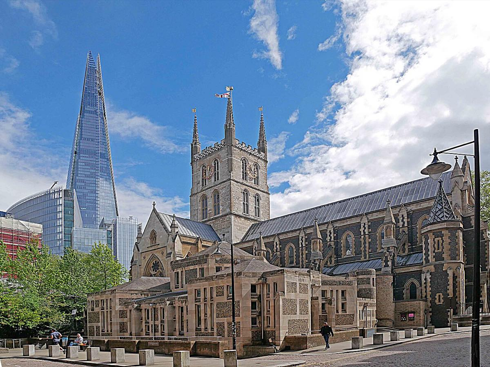
There have been churches on this spot for centuries, but it only became a cathedral in 1905. Shakespeare's younger brother Edmund is buried here. John Harvard, who gave his name to Harvard University, was baptised here in 1607, and a chapel is named after him.
Su questo luogo ci sono chiese da secoli, ma è diventata cattedrale solo nel 1905. Qui è sepolto Edmund, il fratello minore di Shakespeare. John Harvard, da cui prende il nome l'Università di Harvard, fu battezzato qui nel 1607, e gli è dedicata una cappella.
Shakespeare himself, carved in alabaster and lying down with a quill, under a stained-glass window of characters from his plays.
Shakespeare in persona, scolpito in alabastro, sdraiato con una penna d'oca in mano, sotto una vetrata con i personaggi delle sue opere.
Borough Market · lunchBorough Market · pranzo
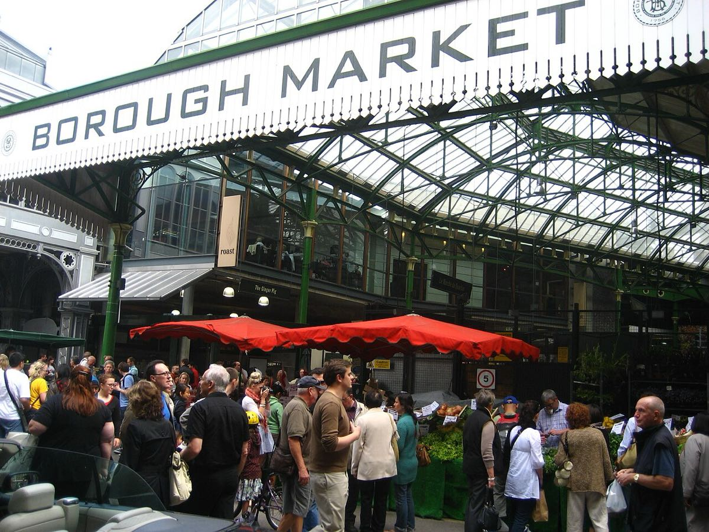
Our lunch stop. There has been a market at this end of London Bridge for centuries (the market claims 1014), and it has been on this site since 1756. Today it's London's best-known food market.
La nostra tappa per il pranzo. A questa estremità del London Bridge c'è un mercato da secoli (il mercato dice dal 1014), e in questo punto dal 1756. Oggi è il mercato alimentare più famoso di Londra.
Go hungry, and walk all the way round before you choose. Queues are part of the experience.
Arriva affamato e fai tutto il giro prima di scegliere. Le code fanno parte dell'esperienza.
The glass-and-iron portico on Stoney Street. It used to be part of the Royal Opera House in Covent Garden.
Il portico in vetro e ferro su Stoney Street. Prima faceva parte della Royal Opera House di Covent Garden.
Open Tue–Fri 10:00–17:00, Sat 09:00–17:00, Sun 10:00–16:00. Closed Mondays.Aperto mar–ven 10:00–17:00, sab 09:00–17:00, dom 10:00–16:00. Chiuso il lunedì.
·
London Bridge
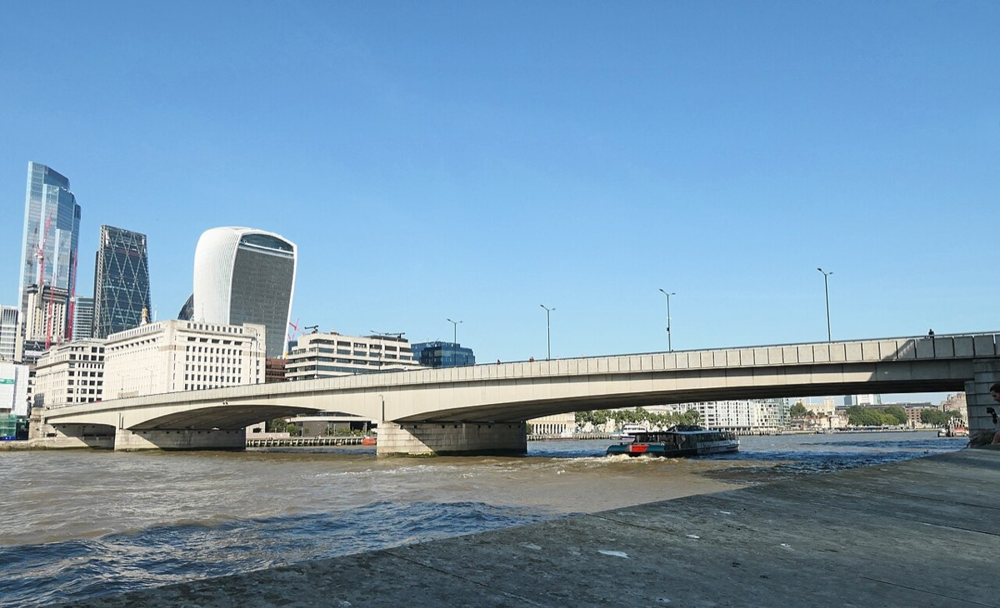
There has been a bridge here since Roman times. The medieval one had houses and shops on it, and traitors' heads on spikes over its gate. Today's plain concrete bridge opened in 1973. The one before it was sold to an American, Robert McCulloch, and rebuilt in Lake Havasu City, Arizona. The story that he thought he was buying Tower Bridge is a myth.
Qui c'è un ponte dai tempi dei Romani. Quello medievale aveva case e negozi sopra, e le teste dei traditori sulle picche sopra la porta. Il semplice ponte in cemento di oggi è stato inaugurato nel 1973. Quello precedente fu venduto a un americano, Robert McCulloch, e ricostruito a Lake Havasu City, in Arizona. La storia che credesse di comprare Tower Bridge è una leggenda.
The gold flames on top of the Monument, across the river.
Le fiamme dorate in cima al Monument, dall'altra parte del fiume.
- The Monument A 61-metre column marking the Great Fire of 1666. Its height equals its distance from the bakery in Pudding Lane where the fire started. You can climb its 311 steps. Una colonna di 61 metri che ricorda il Grande Incendio del 1666. La sua altezza è uguale alla distanza dal forno di Pudding Lane dove iniziò l'incendio. Si può salire in cima: sono 311 gradini.
Hay's Galleria
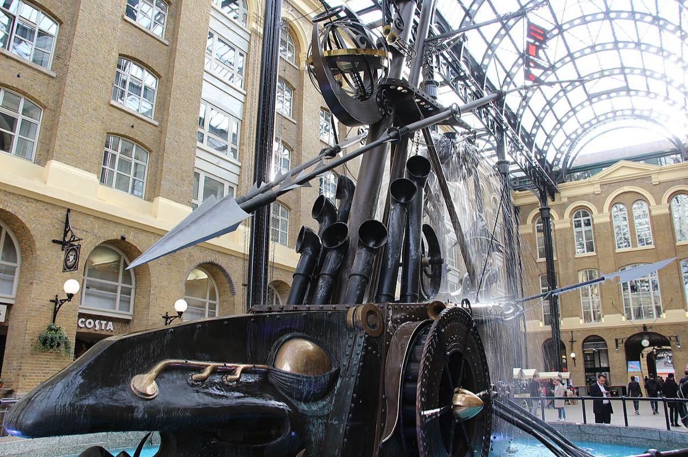
This was Hay's Wharf, one of the busiest docks in the Port of London. So much food was landed here that it was called the Larder of London, and it was a main landing place for tea. In the 1980s the dock was filled in and roofed over with glass.
Questo era Hay's Wharf, uno dei moli più trafficati del porto di Londra. Qui arrivava così tanto cibo che lo chiamavano «la dispensa di Londra», ed era uno dei principali punti di sbarco del tè. Negli anni Ottanta il bacino fu interrato e coperto con un tetto di vetro.
The Navigators, David Kemp's giant bronze ship sculpture from 1987, in the middle of the arcade.
The Navigators, la gigantesca nave-scultura in bronzo di David Kemp del 1987, al centro della galleria.
- Custom House The long classical building where duty was collected on goods arriving by ship.Il lungo edificio neoclassico dove si riscuotevano i dazi sulle merci che arrivavano via nave.
HMS Belfast
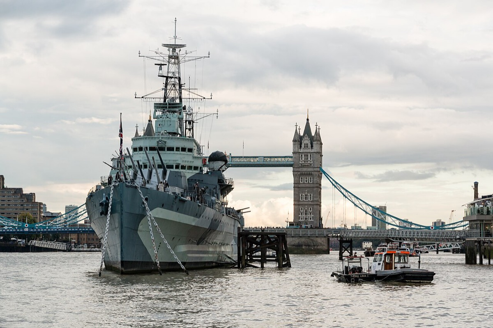
A Second World War cruiser, launched in 1938. She fought at the Battle of North Cape in 1943, when the German battleship Scharnhorst was sunk, and fired on the Normandy beaches on D-Day. She has been a museum since 1971.
Un incrociatore della Seconda guerra mondiale, varato nel 1938. Combatté nella battaglia di Capo Nord del 1943, quando fu affondata la corazzata tedesca Scharnhorst, e bombardò le spiagge della Normandia il D-Day. È un museo dal 1971.
Where the front guns point. They're aimed at London Gateway services on the M1 motorway, about 12 miles away.
Dove puntano i cannoni anteriori: sono mirati sull'area di servizio London Gateway, sull'autostrada M1, a circa 19 chilometri.
The view of the CityLa vista sulla City
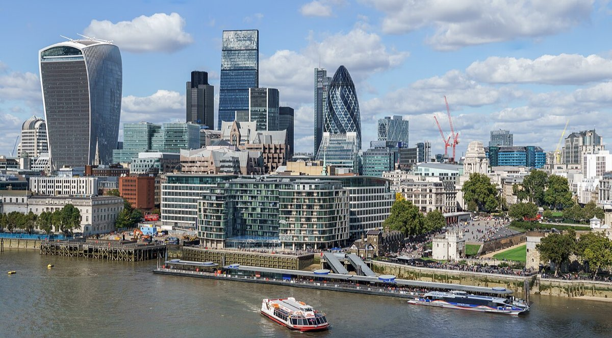
This is the best view of the City of London: the old square mile, now full of banks and insurers, on the other bank. Its towers all have nicknames.
Da qui si gode la vista migliore sulla City di Londra: l'antico «miglio quadrato», oggi pieno di banche e assicurazioni, sull'altra riva. Ogni grattacielo ha un soprannome.
The Tower of London, low and grey among all the glass. It is almost a thousand years older than its neighbours.
La Torre di Londra, bassa e grigia in mezzo a tutto quel vetro. È quasi mille anni più vecchia dei suoi vicini.
- The Gherkin 30 St Mary Axe, finished in 2003. You can see why it got the name.30 St Mary Axe, completato nel 2003. «Gherkin» vuol dire cetriolino: si capisce perché.
- Walkie-Talkie 20 Fenchurch Street. In 2013 its curved glass focused sunlight hot enough to melt parts of a parked car. The Sky Garden at the top is free if you book ahead. 20 Fenchurch Street, il «walkie-talkie». Nel 2013 il suo vetro curvo concentrò la luce del sole al punto da fondere parti di un'auto parcheggiata. Lo Sky Garden in cima è gratuito se prenoti in anticipo.
- Cheesegrater The Leadenhall Building, named for its sloping wedge shape.Il Leadenhall Building, detto «la grattugia» per la sua forma a cuneo inclinato.
Tower Bridge
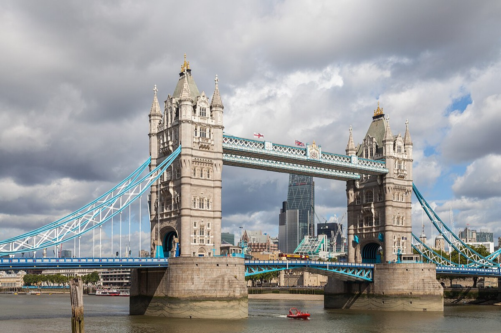
Tower Bridge opened in 1894, and the road in the middle still lifts to let tall ships through. It's free to walk across. The high walkways between the towers, about 42 metres above the river, are part of the paid Tower Bridge Exhibition. They have glass floors, so you can stand and look straight down at the traffic and the boats.
Tower Bridge è stato inaugurato nel 1894, e la carreggiata centrale si solleva ancora per far passare le navi alte. Attraversarlo a piedi è gratis. Le passerelle in alto tra le torri, a circa 42 metri sopra il fiume, fanno parte della Tower Bridge Exhibition, a pagamento. Hanno il pavimento di vetro, così puoi guardare dritto in basso il traffico e le barche.
The lift times. If the bridge is due to open while you're here, it's worth waiting to watch.
Gli orari di apertura del ponte. Se è prevista un'apertura mentre sei qui, vale la pena aspettare per vederla.
There are stairs up from the riverside. To avoid them, walk round by Tooley Street, which meets the bridge at road level.Dal lungofiume si sale con delle scale. Per evitarle, fai il giro da Tooley Street, che arriva al ponte al livello della strada.
Exhibition & glass floorMostra e pavimento di vetro · Lift timesOrari di apertura del ponte ·
Tower of LondonLa Torre di Londra
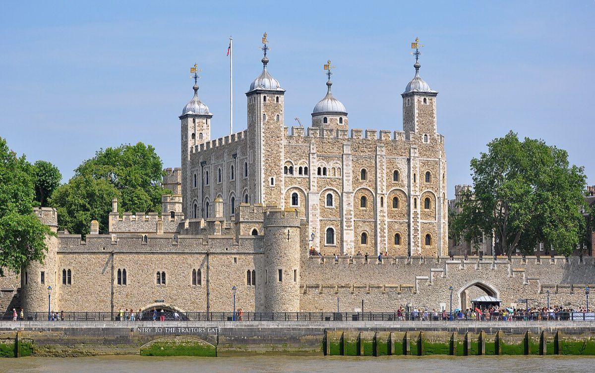
William the Conqueror began the White Tower around 1078 to keep London in line. Since then the Tower has been a royal palace, a prison and a place of execution. It still guards the Crown Jewels.
Guglielmo il Conquistatore iniziò la White Tower intorno al 1078 per tenere a bada Londra. Da allora la Torre è stata palazzo reale, prigione e luogo di esecuzioni. Custodisce ancora i gioielli della Corona.
Traitors' Gate, the water entrance on the river side. And the ravens: legend says the kingdom will fall if they leave, so at least six are kept, plus a spare.
La Traitors' Gate, la «porta dei traditori», l'ingresso dal fiume. E i corvi: la leggenda dice che se se ne andranno il regno cadrà, perciò se ne tengono almeno sei, più uno di riserva.
· tickets needed, best booked aheadbiglietto necessario, meglio prenotare ·
St Katharine Docks
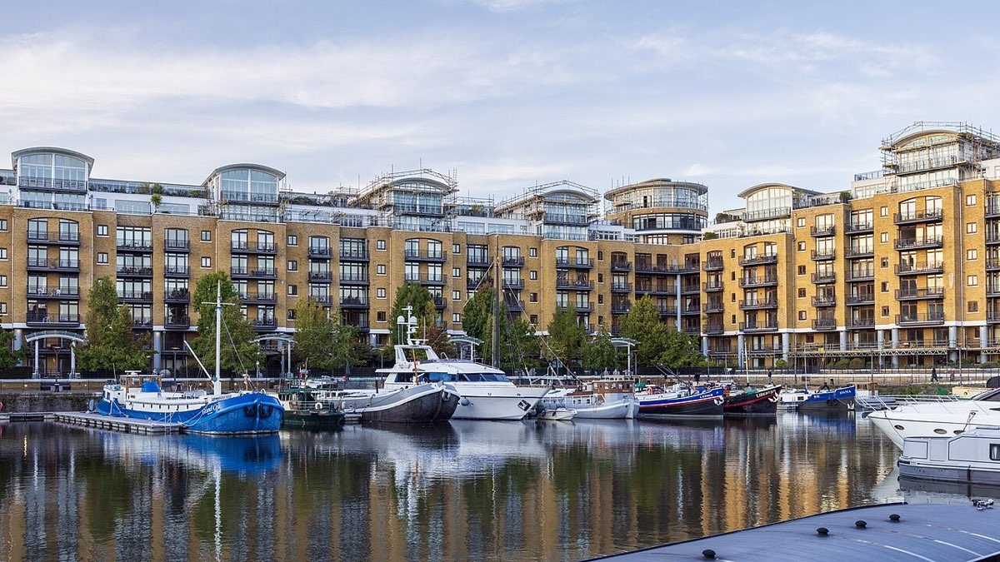
The docks opened in 1828, built by the engineer Thomas Telford, and handled luxury goods like ivory, tea and spices. Too small for modern ships, they were turned into a marina, and now they're full of yachts.
I docks furono aperti nel 1828, costruiti dall'ingegnere Thomas Telford, e qui arrivavano merci di lusso come avorio, tè e spezie. Troppo piccoli per le navi moderne, sono diventati un porticciolo, oggi pieno di yacht.
The Ivory House, the old warehouse with a clock tower, where ivory was once stored.
La Ivory House, il vecchio magazzino con la torre dell'orologio, dove un tempo si conservava l'avorio.
The Dickens Inn
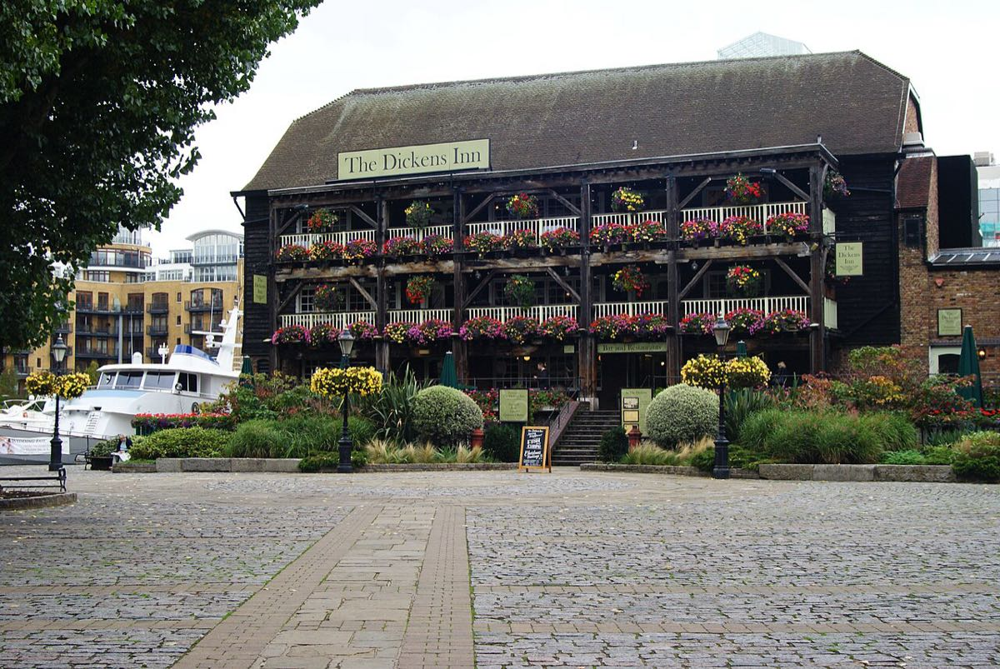
The end of the walk, and time for a drink. The building is an old timber-framed warehouse that was moved to this spot and opened as a pub in 1976 by Cedric Charles Dickens, the novelist's great-grandson. Charles Dickens never drank here, but the name stuck.
La fine della passeggiata: è ora di bere qualcosa. L'edificio è un vecchio magazzino con struttura in legno, spostato qui e aperto come pub nel 1976 da Cedric Charles Dickens, pronipote dello scrittore. Charles Dickens qui non ha mai bevuto, ma il nome è rimasto.
A table on one of the balconies, overlooking the marina.
Un tavolo su uno dei balconi, con vista sul porticciolo.
Getting homeTornare a casa
Two stations are a few minutes' walk away, on the other side of the Tower.
Ci sono due stazioni a pochi minuti a piedi, dall'altra parte della Torre.
- Tower Hill District and Circle lines.Linee District e Circle della metropolitana.
- Tower Gateway DLR, towards Shadwell and east London.DLR, verso Shadwell e l'East London.
Or take an Uber Boat (Thames Clippers) from Tower Pier, beside the Tower, and see the walk again from the water.
Oppure prendi un Uber Boat (Thames Clippers) dal Tower Pier, accanto alla Torre, e rivedi la passeggiata dall'acqua.